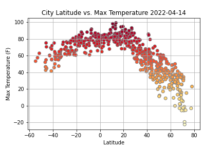

Summary: Latitude vs. X

The purpose of this project was to analyze how weather changes as you get closer to the equator. The accomplish this analysis,
we first pulled data from the OpenWeatherMap API to assemble a dataset on over 500 cities.
After assembling the dataset, we used Matplotlib to plot various aspects of weather vs. latitude. Factor we looked at included:
temperature, cloudiness, wind speed, and humidity. This site provides the source data and visualizatios created as part of the analysis,
as well as explanations and descriptions of any trends and correlations witnessed.